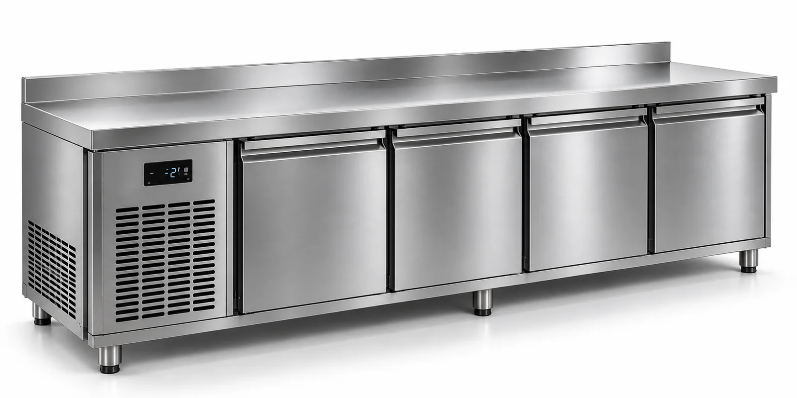
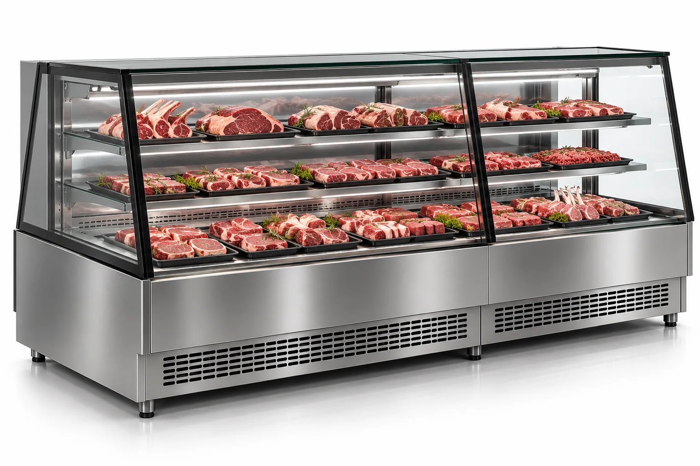
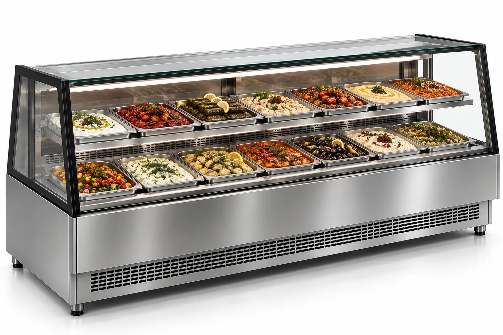
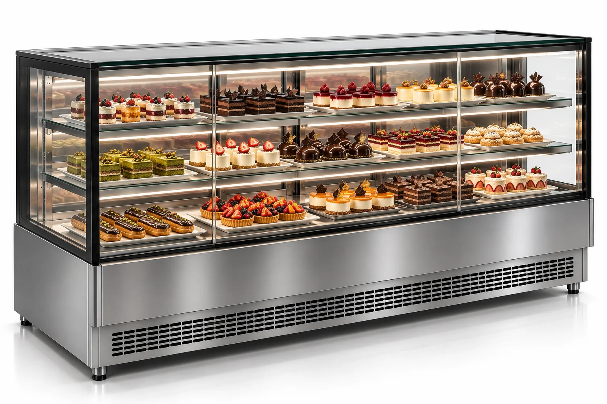
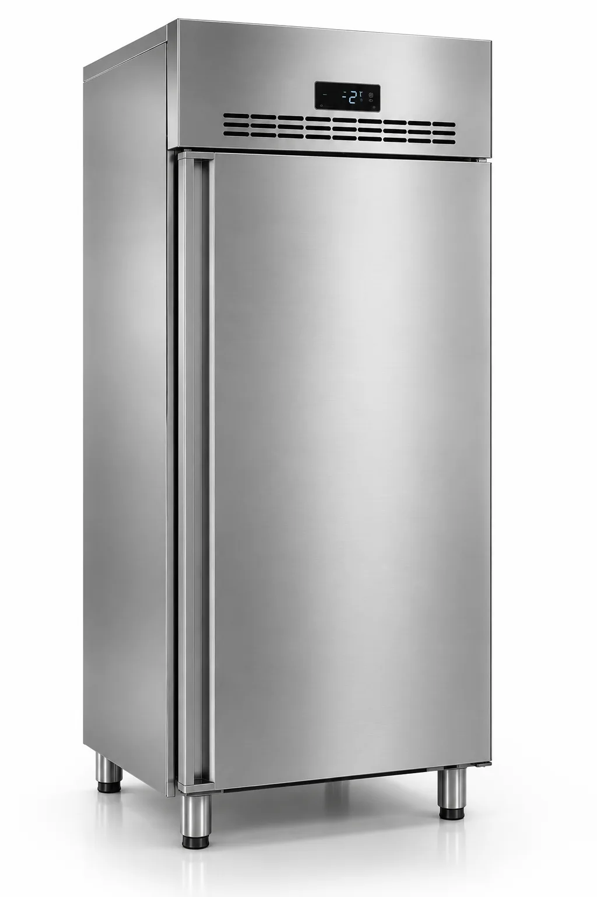
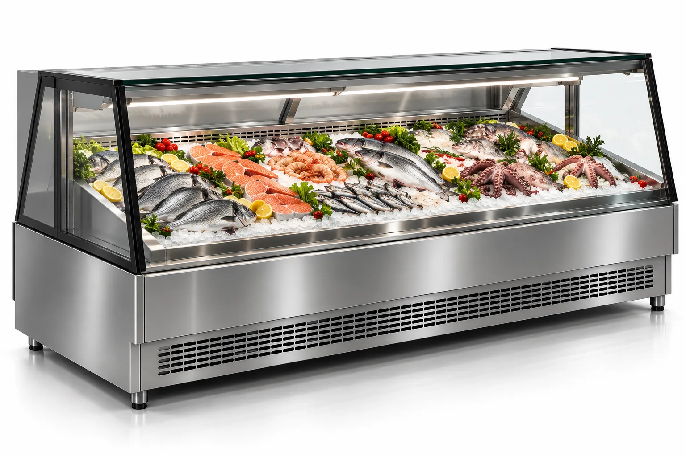
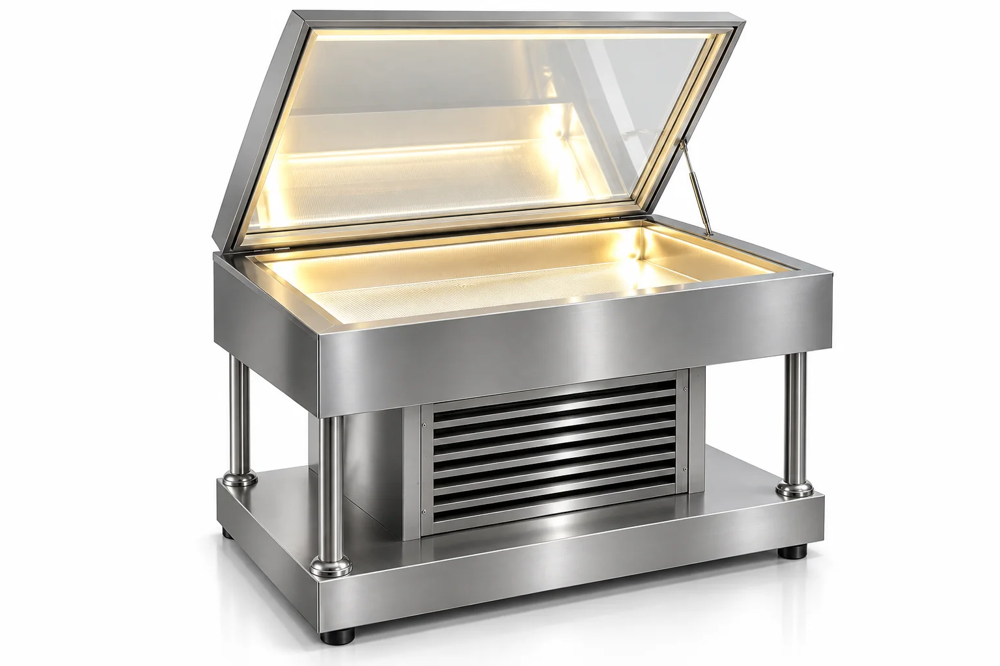

01 / SET ALTI SOĞUTUCULAR
Çalışma hattına entegre soğutma.
Hazırlık ve servis alanlarında tezgâh yüzeyini korurken soğuk muhafazaya hızlı erişim sağlayan paslanmaz çelik set altı çözümleri.
Hazırlık hattından ürün teşhirine kadar işletmenin kullanım biçimine göre profesyonel soğutma çözümleri geliştiriyoruz.

Hazırlık ve servis alanlarında tezgâh yüzeyini korurken soğuk muhafazaya hızlı erişim sağlayan paslanmaz çelik set altı çözümleri.

Kasap, şarküteri ve et konseptli işletmeler için ürünü görünür kılan, düzenli sergilemeye uygun soğutmalı teşhir çözümleri.

Meze, salata ve soğuk ürünlerin GN küvetlerde düzenli biçimde sunulması için tasarlanan profesyonel teşhir sistemleri.

Pastane ve kafelerde pasta, tatlı ve özel ürünlerin aydınlatılmış raflarda sergilenmesine yönelik camlı soğutma çözümleri.

Profesyonel mutfak ve depolama alanlarında dikey hacmi verimli kullanan, kapalı kapılı paslanmaz çelik soğutucu dolaplar.

Balık ve deniz ürünlerinin buz üzerinde düzenli, hijyenik ve dikkat çekici biçimde sunulması için tasarlanan profesyonel paslanmaz çelik soğutmalı teşhir sistemleri.

İşletmenin kullanım şekli, ürün grubu ve mekân ölçülerine göre tasarlanan özel üretim soğutmalı teşhir sistemleri. Paslanmaz çelik gövde, camlı üst kapak, entegre aydınlatma ve profesyonel soğutma sistemi tek bir üründe bir araya getirilir.